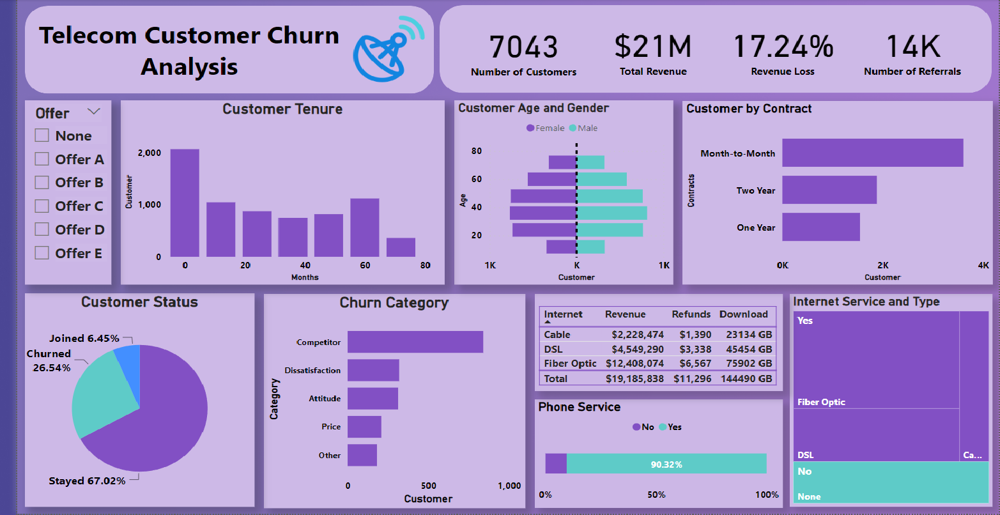

Maven Data Challenge: Telecom Customer Churn Analysis
Tools used: Microsoft Power BI

The dataset came from one of the monthly competitions hosted by Maven Analytics. The dataset is a churn data for a Telecommunications company that provides phone and internet services to 7,043 customers in California, and includes details about customer demographics, location, services, and current status. The goal is to help the company improve retention by identify trends and churn risks.
Please check the GitHub repository for the data visualization.